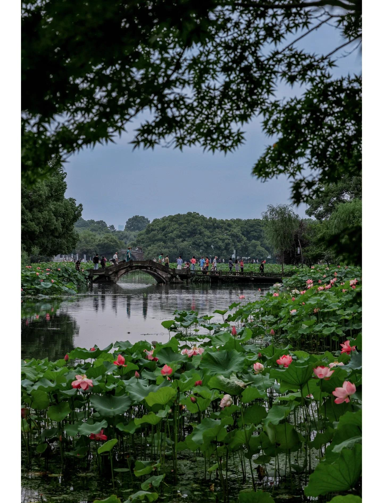
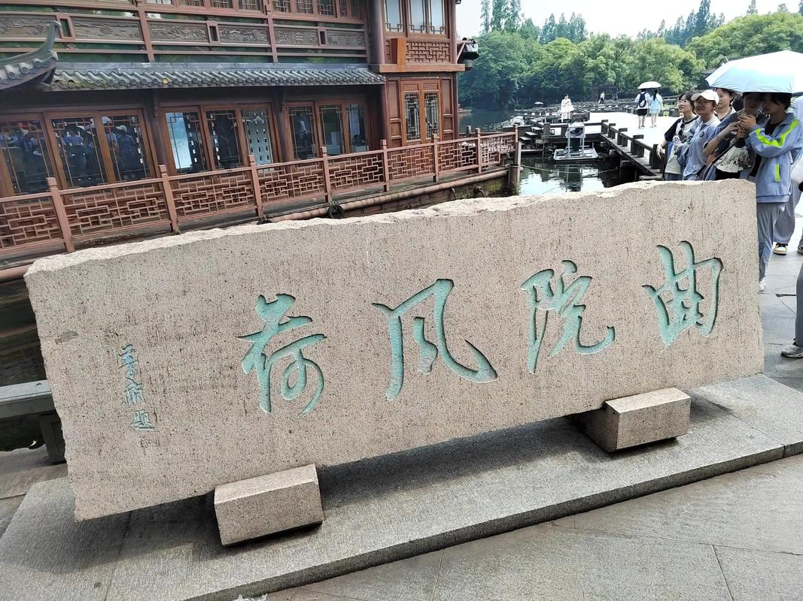
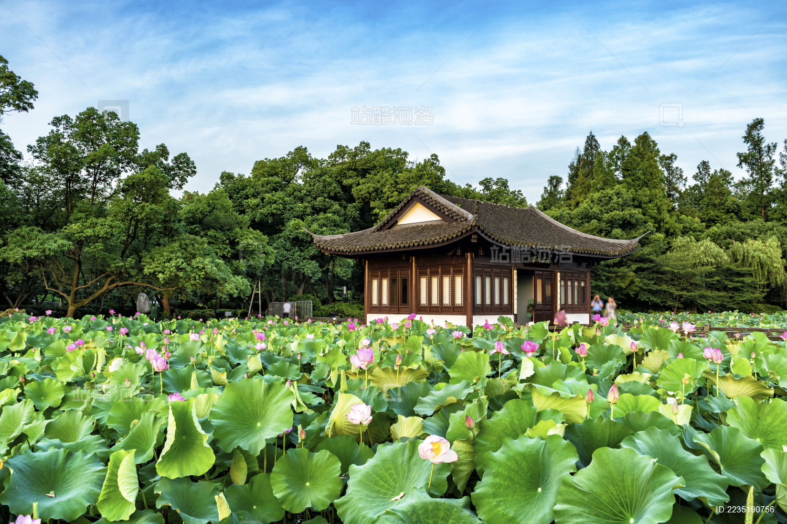

曲院风荷
曲院风荷位于西湖西侧，岳飞庙前面，是西湖十景中唯一以荷花为主题的景区。南宋时，这里有一家酿造官酒的作坊，取金沙涧的溪水造曲酿酒，称为"曲院"。院内种有很多荷花，花开时节香风四溢，故名"曲院风荷"。
现在的曲院风荷公园占地约14公顷，有岳湖、竹素园、风荷、曲院、滨湖密林等5个景区。园内亭、台、楼、榭布局典雅，夏季荷花盛开时，红白相间，青荷盖绿水，芙蓉披红鲜，景色十分迷人。
公园内最著名的是风荷区，这里种植了上百个品种的荷花，有红莲、白莲、重台莲、洒金莲、并蒂莲等。每年6月至9月是荷花盛开的季节，届时园内荷花竞相开放，香气袭人，吸引无数游客前来观赏。
曲院风荷不仅以荷花著称，园内的园林建筑也很有特色。湛碧楼、风微亭、玉带桥等建筑与荷花相映成趣，构成了一幅美丽的江南水乡画卷。傍晚时分，夕阳西下，荷花在余晖中更显娇艳，是摄影爱好者的绝佳取景地。
这里还是杭州著名的避暑胜地，夏季荷塘边的凉亭里常常坐满了纳凉的市民和游客，享受着荷风送来的清凉。


